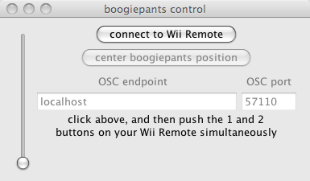
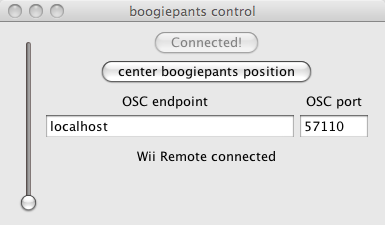

When you start boogiepants you see this control panel:

The only active control is the 'connect to wii remote' button. After you connect, you see this:

The rest of the controls are now active.
The 'center boogiepants position' button allows you to establish a neutral position, irrespective of the position of your wiimote and nunchuk on your body. We recommend using it immediately after establishing a connection:
This establishes your body's neutral posture as the boogiepants neutral position, with the stick straight up and down.
The slider on the left controls sensitivity. Different performers have different levels of pelvic flexibility; we recommend playing around with different levels of sensitivity, to get a feel for what's comfortable for you.
needs demo video.